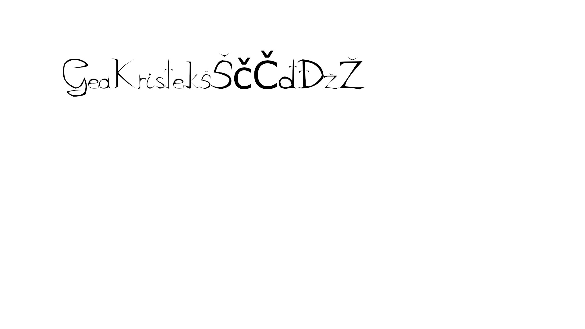

Pravljenje fonta i kreiranje vlastitog!
Crtanje Bezierove krivulje!
Vježba u Inkscape-u - tracing, swatch, transformacije
Učenje i način rada u Photoshopu/GIMPu - retuširanje


Pretvaranje crno-bijele slike u sliku u boji u programu GIMP

Fotomontaža - Izrezivanje više fotografija te spajanje ih na jednu
glavnu (ta glavna ima pozadinu) te mi spajamo više detalja na nju

Pravljenje kinemagrafa - statična slika sa djelovima
koji se pomiću u beskonačnost

Obrada videa, zvuka i efekata u programu Olive - rezanje i spajanje video
isječaka, dodavanje efekata, brisanje i dodavanje zvuka te teksta
Kreiranje web stranice uz pomoć html-a i css-a u
programima kao notepad++